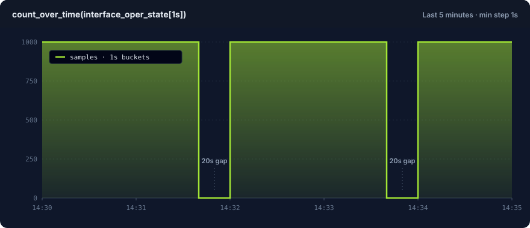

Scenario Fields¶
This page is the per-entry field reference. Every field you can set on a scenarios: entry inside a scenario file is listed below, with examples and defaults. The fields cover generators, schedules, labels, encoders, sinks, and multi-scenario timing controls.
Start with the file guide
For the file shape (version: 2, defaults:, scenarios:), catalog metadata, pack-backed entries, and after: temporal chains, see Scenario Files. Every field below sits inside a scenarios: entry.
Complete example¶
A single entry that uses every available field:
version: 2
kind: runnable
defaults:
rate: 100
duration: 30s
encoder:
type: prometheus_text
precision: 2 # optional: limit values to 2 decimal places
sink:
type: stdout
scenarios:
- id: cpu_usage
signal_type: metrics
name: cpu_usage
metric_type: gauge
help: "CPU usage percent on the device."
generator:
type: sine
amplitude: 50.0
period_secs: 60
offset: 50.0
gaps:
every: 2m
for: 20s
bursts:
every: 10s
for: 2s
multiplier: 5.0
cardinality_spikes:
- label: pod_name
every: 2m
for: 30s
cardinality: 500
strategy: counter
prefix: "pod-"
dynamic_labels:
- key: hostname
prefix: "host-"
cardinality: 10
labels:
zone: us-east-1
jitter: 2.5
jitter_seed: 42
phase_offset: "5s"
clock_group: alert-test
Field reference¶
Core fields¶
The fields below appear on every scenarios: entry, regardless of signal type.
| Field | Type | Required | Default | Description |
|---|---|---|---|---|
name |
string | yes | -- | Metric name. Must match [a-zA-Z_:][a-zA-Z0-9_:]*. |
rate |
float | yes | -- | Events per second. Must be positive. Fractional values are allowed (e.g. 0.5). |
duration |
string | no | runs forever | Total run time. Supports ms, s, m, h units. |
start_time |
string | no | now |
Timestamp anchor written on every emitted event. Accepts an absolute RFC 3339 timestamp, a signed relative offset (+24h, -7d), or now. See Timestamp anchor. |
generator |
object | yes | -- | Value generator configuration. Core types and operational aliases. See Generators. |
encoder |
object | no | prometheus_text |
Output format. See Encoders. |
sink |
object | no | stdout |
Output destination. See Sinks. |
dynamic_labels |
list | no | none | Rotating labels that cycle through values on every tick. See Dynamic labels. |
labels |
map | no | none | Static key-value labels attached to every event. |
jitter |
float | no | none | Noise amplitude. Adds uniform noise in [-jitter, +jitter] to every generated value. See Generators - Jitter. |
jitter_seed |
integer | no | 0 |
Seed for deterministic jitter noise. Different seeds produce different noise sequences. |
on_sink_error |
string | no | warn |
Behavior when the sink returns an error mid-run. warn logs the error, drops the batch, and keeps running. fail propagates the error and exits the runner. Overrides defaults.on_sink_error. See Sink-error policy. |
metric_type |
string | no | derived | Prometheus exposition type: gauge, counter, histogram, summary, or untyped. Appears on the sonda-server /scenarios/metrics endpoints as the # TYPE line. See Prometheus exposition fields. |
help |
string | no | none | Free-text description emitted as the # HELP line on the sonda-server /scenarios/metrics endpoints. Omitted when unset. See Prometheus exposition fields. |
Prometheus exposition fields¶
metric_type and help annotate a scenario's metric so the sonda-server /scenarios/metrics endpoints emit Prometheus # TYPE and # HELP lines. Both fields apply to metrics, histogram, and summary entries. Log entries ignore them.
These annotations have no effect for the per-event sinks that the sonda run CLI uses (stdout, file, tcp, and so on). They exist for scrape-based delivery through sonda-server.
| Field | Type | Required | Default | Description |
|---|---|---|---|---|
metric_type |
string | no | derived (see below) | One of gauge, counter, histogram, summary, untyped. |
help |
string | no | none | Free-text description. When omitted, no # HELP line is emitted. |
Defaults, applied when metric_type is omitted:
| Signal | Generator | Default metric_type |
|---|---|---|
metrics |
step |
counter |
metrics |
any other generator | gauge |
histogram |
-- | histogram |
summary |
-- | summary |
scenarios:
- id: memory_utilization
signal_type: metrics
name: memory_utilization
metric_type: gauge
help: "Memory usage percent on the device."
generator:
type: constant
value: 41.5
labels:
device: srl1
Scrape the server and the response carries both annotations:
# HELP memory_utilization Memory usage percent on the device.
# TYPE memory_utilization gauge
memory_utilization{device="srl1"} 41.5
Why declare metric_type?
Prometheus-text consumers (Prometheus, VictoriaMetrics, Telegraf, vmagent) treat unannotated metrics as untyped. Some downstream tooling renames untyped samples. For example, an untyped metric named bgp_oper_state may become bgp_oper_state_value after a Telegraf-style relay. Declaring metric_type: keeps the metric name stable across every scraping consumer in the chain.
Mixed-type collisions become untyped
Prometheus allows only one # TYPE line per metric name. Suppose two scenarios share a name: but declare different metric_type values, one gauge and one counter. The aggregate GET /scenarios/metrics emits a single # TYPE <name> untyped block containing samples from both, and logs a server-side warning. Use a consistent metric_type per metric name to avoid this.
Gap window¶
Gaps create recurring silent periods where no events are emitted. Both fields must be provided together.
| Field | Type | Required | Description |
|---|---|---|---|
gaps.every |
string | yes (if gaps used) | Recurrence interval (e.g. "2m"). |
gaps.for |
string | yes (if gaps used) | Duration of each gap. Must be less than every. |
This emits events for 1m40s, then is silent for 20s, then repeats.
Checking gaps in Prometheus or Grafana
Gaps are visually hard to see at default settings. Two common pitfalls catch first-time users:
- Instant queries:
interface_oper_statein the Prometheus expression bar uses a 5-minutelookback_delta. A series that stopped emitting 10 seconds ago still appears "live" for up to 5 minutes. A 20-second gap is invisible at the default settings. - Auto step size:
present_over_time(interface_oper_state[5s])over a 5-minute range is evaluated at ~30-second steps in Grafana Explore. A 4-minute run with 240k samples collapses to ~7 dots on the graph. The data is there. The evaluation cadence hid it.
To see the duty cycle, use this query in Grafana Explore:
With these panel settings:
- Min step:
1s(otherwise Grafana picks a larger step and the gaps blur together) - Time range:
Last 5 minutes(shows two full cycles of the example below) - View: Time series (default)

Above: count_over_time(interface_oper_state[1s]) against examples/basic-metrics.yaml. The example declares rate: 1000 and gaps: every: 2m for: 20s. You see ~100s of ~1000 samples/sec, then 20s of zero, repeating.
Why every x-axis point is honest data: count_over_time(...[1s]) groups samples into 1-second windows and returns 0 for empty windows (not null). No connect-null-values toggle is needed. With a 1-second min step, Grafana evaluates once per second, so one window maps to one x-axis point. What you see is what arrived.
The same approach works for bursts: (the rate rises during a burst window) and for any other rate-shaping field. The rule: when checking short-window behavior, set your evaluation step below the window you want to see.
Burst window¶
Bursts create recurring high-rate periods. All three fields must be provided together. If a gap and a burst overlap, the gap takes priority.
| Field | Type | Required | Description |
|---|---|---|---|
bursts.every |
string | yes (if bursts used) | Recurrence interval (e.g. "10s"). |
bursts.for |
string | yes (if bursts used) | Duration of each burst. Must be less than every. |
bursts.multiplier |
float | yes (if bursts used) | Rate multiplier during burst. Must be positive. |
At a base rate of 100 events/sec, this produces 500 events/sec for 2 seconds out of every 10.
Cardinality spike window¶
Cardinality spikes inject dynamic label values during recurring windows. They reproduce the label explosions that break real pipelines. During a spike window, a configured label key is added with one of cardinality unique values. Outside the window, the label is absent.
| Field | Type | Required | Default | Description |
|---|---|---|---|---|
cardinality_spikes[].label |
string | yes | -- | Label key to inject during the spike. |
cardinality_spikes[].every |
string | yes | -- | Recurrence interval (e.g. "2m"). |
cardinality_spikes[].for |
string | yes | -- | Duration of each spike. Must be less than every. |
cardinality_spikes[].cardinality |
integer | yes | -- | Number of unique label values. Must be > 0. |
cardinality_spikes[].strategy |
string | no | counter |
Value generation strategy: counter or random. |
cardinality_spikes[].prefix |
string | no | "{label}_" |
Prefix for generated label values. |
cardinality_spikes[].seed |
integer | no | 0 |
RNG seed for the random strategy. |
cardinality_spikes:
- label: pod_name
every: 2m
for: 30s
cardinality: 500
strategy: counter
prefix: "pod-"
Strategies:
counter— Generates sequential values:{prefix}0,{prefix}1, ...,{prefix}{cardinality-1}, then wraps around. Deterministic without a seed.random— Generates hash-like hex values via SplitMix64:{prefix}{hex}. Produces exactlycardinalityunique values. Requires aseedfor reproducibility.
Note
Gap windows take priority over spikes. If a gap and a spike overlap, the gap suppresses all output, including spike labels.
Dynamic labels¶
Dynamic labels attach a rotating label value to every emitted event. They simulate a stable fleet of N distinct sources, such as hostnames, pod names, or regions, without a time window. Unlike cardinality spikes, the label is always present, not only during a spike window.
This lets you test dashboards that aggregate by label (for example, sum by (hostname)) and exercise high-cardinality query paths in Prometheus or VictoriaMetrics.
| Field | Type | Required | Default | Description |
|---|---|---|---|---|
dynamic_labels[].key |
string | yes | -- | Label key to attach. Must be a valid Prometheus label key. |
dynamic_labels[].prefix |
string | no | "{key}_" |
Prefix for counter strategy values (for example, "host-" produces host-0, host-1). |
dynamic_labels[].cardinality |
integer | yes (counter) | -- | Number of unique values in the cycle. Must be > 0. |
dynamic_labels[].values |
list | yes (values list) | -- | Explicit list of label values to cycle through. |
Two strategies, chosen by which fields you provide:
Provide prefix and cardinality. Values cycle as {prefix}0, {prefix}1, ..., {prefix}{cardinality-1}, then wrap around.
node_cpu_usage{hostname="host-0",...} 50 1712345678000
node_cpu_usage{hostname="host-1",...} 50.4 1712345678100
...
node_cpu_usage{hostname="host-9",...} 53.7 1712345678900
node_cpu_usage{hostname="host-0",...} 54.1 1712345679000
If you omit prefix, it defaults to "{key}_" (for example, hostname_0, hostname_1).
You can combine multiple dynamic labels in the same scenario. Each label cycles independently based on the tick counter:
dynamic_labels:
- key: hostname
prefix: "web-"
cardinality: 3
- key: region
values: [us-east-1, eu-west-1]
request_count{hostname="web-0",region="us-east-1",...} 0
request_count{hostname="web-1",region="eu-west-1",...} 1
request_count{hostname="web-2",region="us-east-1",...} 2
request_count{hostname="web-0",region="eu-west-1",...} 3
Dynamic labels vs. cardinality spikes
Use dynamic labels when you want a label to be present on every event (fleet simulation, multi-region testing). Use cardinality spikes when you want a label to appear only during recurring time windows (label explosions that come and go).
Label merge behavior
Dynamic labels are merged with static labels: on every tick. If a dynamic label key collides with a static label key, the dynamic value wins. Dynamic labels work the same way for both metric and log scenarios.
Loki sinks turn dynamic labels into separate streams
A Loki stream is the unit Loki indexes by. It is identified by its label set. When a logs scenario uses a loki sink, each unique dynamic_labels combination becomes its own stream. A rotation through peer_address: [10.1.2.2, 10.1.7.2] produces two streams ({peer_address="10.1.2.2"} and {peer_address="10.1.7.2"}). Both are queryable in Grafana by label. The Loki sink limits unique streams per push at max_streams_per_push (default 128). Raise the limit if a rotation needs more. See Dynamic Labels — Loki sinks for a worked BGP-peers example.
Temporal fields¶
These fields control when and how entries coordinate inside a multi-entry scenario file. They also apply to bodies sent to POST /scenarios.
| Field | Type | Required | Default | Description |
|---|---|---|---|---|
id |
string | no | auto | Entry identifier. after: and explicit clock_group: references target other entries by id. Defaults to the entry's name when omitted. |
phase_offset |
string | no | none | Explicit delay before starting this scenario. Supports ms, s, m, h. Mutually exclusive with after: (the compiler computes phase_offset from after:). |
clock_group |
string | no | none | Entries with the same clock group share a start-time reference. Auto-assigned when you use after:. |
after |
object | no | none | Start this entry when another entry's generator crosses a threshold. See Temporal chains. |
See Multi-signal files below for a working example.
Duration format¶
All duration fields (duration, gaps.every, gaps.for, bursts.every, bursts.for, phase_offset) accept the same format:
| Unit | Example | Description |
|---|---|---|
ms |
100ms |
Milliseconds |
s |
30s |
Seconds |
m |
5m |
Minutes |
h |
1h |
Hours |
Fractional values are supported in all units. For example, 1.5s means 1500 milliseconds and 0.5m means 30 seconds.
Timestamp anchor¶
start_time sets the timestamp anchor written on every emitted event. It shifts only the timestamp on each event. The scenario still runs for its real wall-clock duration, emits the same events, with the same values, at the same spacing. Only the anchor moves.
It applies to all four signal types (metrics, logs, histograms, summaries) and every exposition format. Set it on defaults: to anchor the whole file, or on an individual entry to anchor only that scenario.
It accepts three forms:
A signed offset from scenario start. + shifts forward, - shifts backward. The grammar matches duration: (ms, s, m, h) plus d for days.
Two use cases motivate it:
- Replaying a historical incident into its real dashboard window. Anchor the run to a past time so the emitted samples appear in the time range where the incident actually happened. This helps with postmortems and with tuning alert rules against the data as it looked on the day.
- Projecting load into a future window. Anchor the run forward to rehearse capacity headroom or forecast-driven alerts against a window that has not arrived yet.
Future timestamps are backend-dependent
Anchoring into the past works universally. Anchoring into the future does not. Stock Prometheus enforces a future-sample tolerance and drops samples timestamped too far ahead. VictoriaMetrics is lenient and accepts them. If you need the forecasting use case, send to VictoriaMetrics or to a Prometheus tuned for far-future samples. Plain Prometheus rejects them.
Log entries¶
A log entry uses signal_type: logs and puts the generator configuration under log_generator: (not generator:). The default encoder is json_lines. Any encoder that accepts log events also works.
version: 2
kind: runnable
defaults:
rate: 10
duration: 60s
encoder:
type: json_lines
sink:
type: stdout
labels:
job: sonda
env: dev
scenarios:
- id: app_logs
signal_type: logs
name: app_logs
log_generator:
type: template
templates:
- message: "Request from {ip} to {endpoint}"
field_pools:
ip: ["10.0.0.1", "10.0.0.2"]
endpoint: ["/api", "/health"]
severity_weights:
info: 0.7
warn: 0.2
error: 0.1
seed: 42
The labels and dynamic_labels fields work the same way as for metric entries. Static labels attach a fixed key-value to every event. Dynamic labels rotate values per tick. Both appear in JSON Lines output and become Loki stream labels when the sink is loki.
Multi-signal files¶
Each entry in a scenarios: list declares its own signal_type. The compiler routes the entry to the matching generator family at compile time.
signal_type |
Description | Body shape |
|---|---|---|
metrics |
Gauge / counter metrics via a generator or operational alias | generator: + standard fields |
logs |
Structured log events | log_generator: (template or replay) |
histogram |
Prometheus-style histogram (bucket, count, sum) | distribution: + histogram fields |
summary |
Prometheus-style summary (quantile, count, sum) | distribution: + summary fields |
Two metric entries correlated with phase_offset and a shared clock_group::
version: 2
kind: runnable
defaults:
rate: 1
duration: 120s
encoder:
type: prometheus_text
sink:
type: stdout
labels:
instance: server-01
job: node
scenarios:
- id: cpu_usage
signal_type: metrics
name: cpu_usage
phase_offset: "0s"
clock_group: alert-test
generator:
type: sequence
values: [20, 20, 20, 95, 95, 95, 95, 95, 20, 20]
repeat: true
- id: memory_usage
signal_type: metrics
name: memory_usage_percent
phase_offset: "3s"
clock_group: alert-test
generator:
type: sequence
values: [40, 40, 40, 88, 88, 88, 88, 88, 40, 40]
repeat: true
The phase_offset on memory_usage delays it by 3 seconds, so CPU rises first and memory follows. Both entries share the alert-test clock group for synchronized timing. For declarative chains, use after: instead of hand-tuned offsets.
Mixing all four signal types¶
version: 2
kind: runnable
defaults:
rate: 1
duration: 60s
encoder:
type: prometheus_text
sink:
type: stdout
scenarios:
- id: http_requests_total
signal_type: metrics
name: http_requests_total
rate: 10
generator:
type: step
start: 0
step_size: 1.0
labels:
job: api
- id: http_request_duration_seconds
signal_type: histogram
name: http_request_duration_seconds
distribution:
type: exponential
rate: 10.0
observations_per_tick: 100
seed: 42
labels:
job: api
- id: rpc_duration_seconds
signal_type: summary
name: rpc_duration_seconds
distribution:
type: normal
mean: 0.1
stddev: 0.02
observations_per_tick: 100
labels:
service: auth
- id: app_logs
signal_type: logs
name: app_logs
rate: 5
encoder:
type: json_lines
log_generator:
type: template
templates:
- message: "Request processed in {duration}ms"
field_pools:
duration: ["12", "45", "120", "500"]
Histogram and summary entries use different fields
Histogram and summary entries do not have a generator: block. They use distribution:, buckets: / quantiles:, and observations_per_tick: on the entry. See Generators — histogram and summary for the full field reference.
Pack-backed entries¶
A scenarios: entry with pack: <name> replaces the name: + generator: pair with a reference to a metric pack. The compiler expands the pack into one entry per metric at compile time:
version: 2
kind: runnable
defaults:
rate: 1
duration: 10s
encoder:
type: prometheus_text
sink:
type: stdout
scenarios:
- id: edge_router_snmp
signal_type: metrics
pack: telegraf_snmp_interface
labels:
device: rtr-edge-01
ifName: GigabitEthernet0/0/0
ifIndex: "1"
Any labels, rate, duration, encoder, or sink you set on the entry applies to every expanded metric. Per-metric overrides: let you tune individual metrics inside the pack. See the Metric Packs guide for the full reference.
CLI overrides¶
Any of the common settings (rate, duration, sink, endpoint, encoder, label, on-sink-error) can be overridden from the command line. CLI flags always take precedence over YAML values:
This loads the file and overrides duration and rate for every entry. Encoder-specific settings like precision and pack-specific overrides live in the YAML. See CLI Reference: sonda run for the full override list.
What next¶
- Scenario Files — file shape,
defaults:,after:chains, and catalog metadata. - CLI Reference — sonda run — the entry point for scenario files.
- Metric Packs — reusable metric name and label schemas you can reference via
pack:.